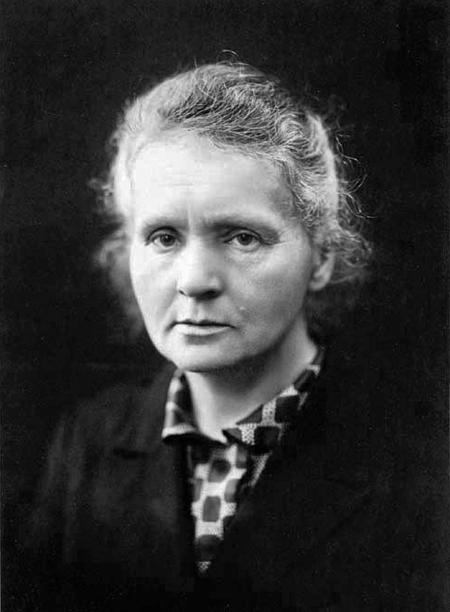
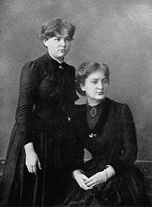
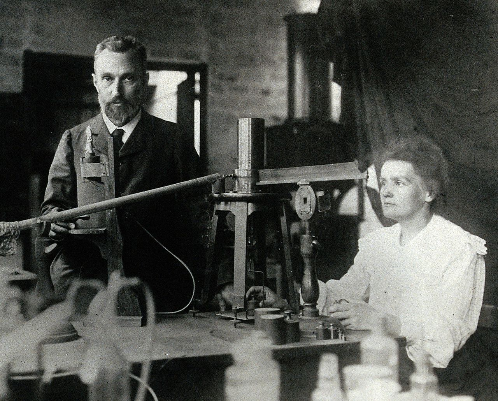
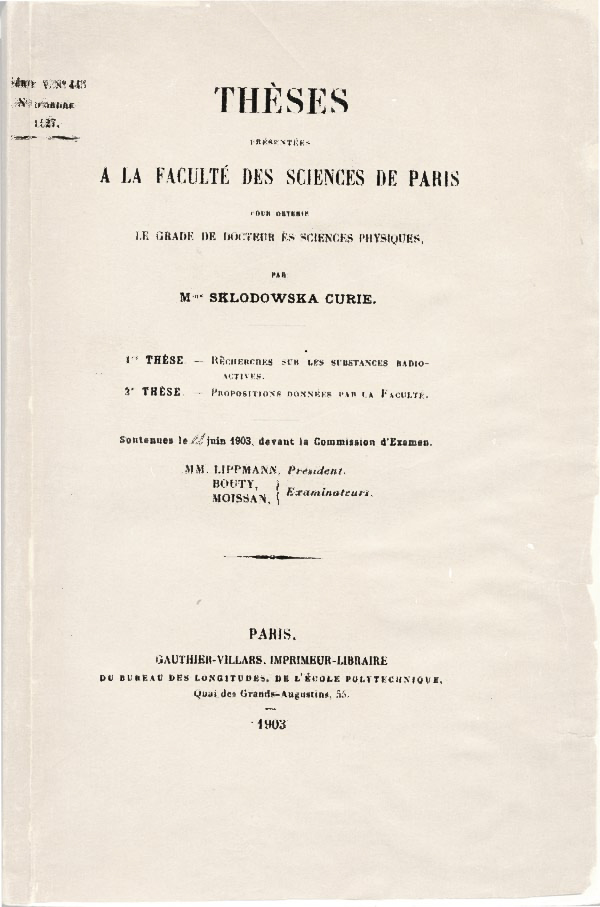
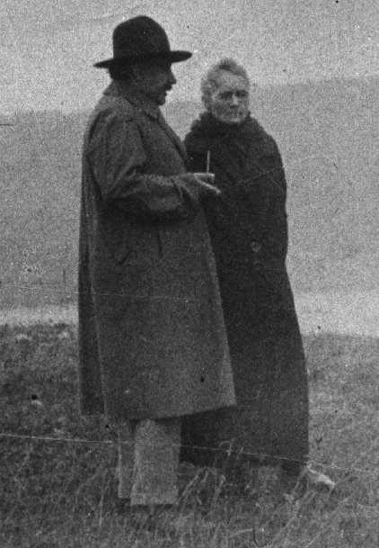
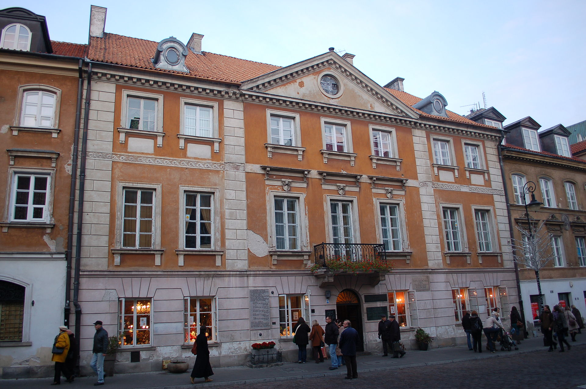

Marie Curie, născută Maria Salomea Skłodowska născută pe 7 noiembrie 1867, în Varșovia, Imperiul Rus – decedată în 4 iulie 1934, Sancellemoz, Ron-Alpi, Franța) a fost o savantă poloneză stabilită în Franța, dublu laureată a Premiului Nobel. A fost singura savantă care a primit două premii Nobel în două domenii științifice diferite (fizică și chimie). A introdus în fizică termenul de radioactivitate. Este cunoscută pentru cercetările sale în domeniul elementelor radioactive, al radioactivității naturale și al aplicațiilor acestora în medicină. A fost soția unui laureat al Premiului Nobel, fizicianul Pierre Curie, și mama unei laureate a Premiului Nobel (Irène Joliot-Curie). Cu excepția fiicei sale Ève Curie (scriitoare), toți descendenții săi vor urma cariere științifice.
S-a născut la Varșovia, într-o perioadă în care țara se afla sub stăpânirea Rusiei țariste, într-o familie de profesori, care îi insuflă de timpuriu dragostea pentru învățătură. Astfel, încă din tinerețe își manifestă interesul pentru studiu, pasiune moștenită probabil de la tatăl ei, Vladislav Skłodowski, profesor de matematică și fizică la un liceu, care a studiat la Universitatea din Sankt Petersburg. Acesta era un bărbat inteligent care excela în aproape orice domeniu, inclusiv lingvistică și istorie. Mama sa, Bronisława Bugoska, era instructoare și apoi directoare la un pension de fete.
Tânăra Maria Maria Skłodowska nu a avut parte de o copilărie prea fericită. În 1876, sora ei, Zofia, moare de tifos exantematic, iar mama, care suferea de tuberculoză (pe atunci nevindecabilă), se internează într-un sanatoriu și se stinge din viață în 1878, pe când Maria avea doar zece ani. Tatăl este înlăturat din funcție pentru atitudinea sa împotriva stăpânirii țariste, care devenise foarte apăsătoare (interzisese chiar și folosirea limbii poloneze).

În fața loviturilor destinului, tânăra Maria se refugiază în studiu, unde obține rezultate maxime. La vârsta de zece ani, studia în aceeași clasă cu sora ei mai mare, Helena, de 12 ani. Directoarea acestei școli introdusese pe ascuns o materie în planul de învățământ al elevilor săi. În locul orelor de limbă și istorie rusă, impuse de stat, a introdus studiul culturii poloneze. Inspectorii din partea autorității de ocupație rusă veneau periodic să verifice dacă predarea se făcea în limba rusă. Elevii ascundeau manualele, iar profesorii o solicitau pe Maria, fiind cea mai bine pregătită, să răspundă (în rusă) la diverse întrebări ale inspectorului. Cel mai greu moment pentru ea era clipa când trebuia să răspundă la întrebarea referitoare la conducerea Poloniei. Maria și-a menținut în continuare antipatia față de guvernarea rusă și resimte o deplină satisfacție la aflarea veștii asasinării țarului Alexandru al II-lea (1881).
În 1883, la 15 ani, Maria este absolventă a cursurilor secundare cu medalia de aur. Maria se înscrie la cursuri la care puteau participa și femei. Intră în organizația clandestină feministă Universitatea Ambulantă și ia legătură cu concepțiile pozitiviste ale lui Auguste Comte. Maria ar fi dorit să își continue studiile la Universitatea din Varșovia. Deoarece în Polonia acelei epoci, aflată sub dominația Rusiei țariste, femeile nu aveau dreptul la studii universitare, Maria se decide să își continue studiile peste hotare. Nici acest lucru nu era posibil din motive financiare, mai ales că tatăl ei pierduse foarte mult investind într-o afacere sortită eșecului. Din cauza acestor dificultăți financiare și pentru a putea finanța studiile de medicină pe care sora sa, Bronisława, le începuse la Paris, la 17 ani, Maria începe să lucreze ca guvernantă. Bronisława pornește la Paris în ianuarie 1886, cu promisiunea că, după ce va deveni medic, să finanțeze și studiile Mariei.
Marie Curie predă patru ore zilnic fiicei celei mari a familiei și trei ore celei mai mici ale unei familii înstărite din Varșovia. Deoarece în acea epocă guvernatele ajutau și la treburile casei, puținul timp liber pe care îl are la dispoziție Marie Curie îl dedică studiului științific ajungând să se relaxeze rezolvând probleme de matematică. Dar inteligența și valoarea ei nu întârzie să iasă la lumină: Maria reușește să adune toți copiii din vecinătate și să îi învețe pe ascuns citirea și scrierea în limba polonă.
În perioada sărbătorilor de iarnă ale acelui an, Kazimir, fiul cel mare al familiei respective, care studia matematica la Universitatea din Varșovia, revine acasă și este plăcut surprins de calitățile guvernantei surorilor sale. Între cei doi au loc diverse discuții intelectuale ca între cei doi să se înfiripe și o relație sentimentală. Mai mult, cei doi pun la cale planuri de căsătorie, dar se lovesc de opoziția familiei angajatoare, care nu o considera pe Maria, o guvernantă săracă, ca fiind potrivită pentru fiul cel mare. Marie Curie este dezamăgită, mai ales că nici Kazimir nu pare să opună rezistență acelor concepții elitiste.
Din fericire, încheierea perioadei de slujbă ca guvernantă coincide cu succesul tatălui ei, care, în aprilie 1888 primește o slujbă mai bine plătită. Astfel puteau fi finanțate și studiile Mariei care reușește să își achiziționeze echipamente cu care putea derula experimente științifice.
La Paris, Bronisława se logodește cu un medic polonez, pe care îl chema tot Kazimir, și o invită pe sora sa, Maria să locuiască la ei. Aceasta descoperă atmosfera de libertate din Paris și adoptă numele de Marie. În 1891 este admisă la Universitatea din Paris (Sorbona), unde reușește să se acomodeze, dar cu o anumită dificultate, atât datorită faptului că nu stăpânea bine limba franceză, dar și datorită faptului că, la 24 de ani, se considera prea în vârstă față de colegii săi.
Soțul Bronisławei, polonez patriot, activează împotriva guvernării țariste și primește vizite de la persoane cu astfel de simpatii revoluționare. Este la rându-i invitat la concertele susținute de Ignacy Paderewski, muzician care va deveni conducător al Poloniei după eliberarea țării. Pentru a găsi mai multă liniște, Marie Curie se mută în propriul ei apartament, situat în apropierea universității. Duce o viață modestă, însă studiază cu asiduitate. Totuși privațiunile pe care este nevoită să le îndure o fac să cedeze. Hrănindu-se la limita subzistenței, este găsită aproape fără viață de către cumnatul ei, Kazimir, care o readuce în casa surorii sale. Aici își reface sănătatea, dar, o dată revenită în apartamentul ei, continuă stilul de viață auster.
În 1893 este absolventă a cursurilor superioare magna cum laude și devine licențiată în fizică. Dar situația financiară precară își spune din nou cuvântul și Maria este nevoită să se întoarcă în Polonia. Aici, grație demersurilor prietenei sale, Jadwiga Sikorska, Marie primește un ajutor neașteptat: o bursă din partea guvernului Poloniei. Își reia studiile la Universitatea din Paris, iar un an mai târziu, în 1894, obține licența în matematică.
Destinul îi rezervă o surpriză fericită, care avea să îi deschidă porțile către o nouă lume de oportunități și de noi orizonturi: întâlnirea la Paris cu viitorul soț, Pierre Curie. Pe acesta îl cunoaște datorită faptului că avea nevoie de un fizician cu experiență care să o ajute în cercetările privind proprietățile magnetice ale oțelului, temă de cercetare încredințată Mariei de către profesorul îndrumător Gabriel Lippmann. Prin intermediul lui Josef Kovalsky, profesor de fizică de la Universitatea din Freiburg ce tocmai venise la Paris pentru a ține o conferință, în 1894, Marie îl cunoaște pe Pierre Curie. Deși avea numai 35 de ani, acesta era deja celebru în lumea academică pentru cercetările sale cu privire la natura magnetismului. Deși între cei doi se leagă o relație puternică, Marie se reîntoarce în țara natală, de care o legau sentimente puternice. Nu stă acolo decât o scurtă perioadă și revine la Paris. Se căsătorește cu Pierre Curie pe 26 iulie 1895, cu o ceremonie modestă, lipsită de fast. La fel de simplă este și luna de miere pe care cei doi o petrec colindând Franța pe biciclete.
Marie Curie începe cercetările în domeniul radioactivității, la care se va alătura curând și soțul său, descoperind împreună noi elemente radioactive: poloniul și radiul. Pentru aceste cercetări primesc amândoi Premiul Nobel pentru Fizică în 1903, împreună cu Henri Becquerel.

În septembrie 1897 se naște prima fetiță a cuplului de savanți și anume Irène. A doua fetiță, Ève, se naște în 1904. Pe 19 aprilie 1906, Marie Curie primește o puternică lovitură din partea destinului. În timp ce se deplasa către o editură pentru a publica un manuscris, traversând o intersecție aglomerată, Pierre Curie este lovit de un atelaj greu și își pierde viața, la numai 46 de ani. Marie Curie va scrie o biografie în care evocă viața și activitatea soțului.
Descoperirea radioactivității aducea o nouă lumină în ceea ce se cunoștea până atunci despre atom. Marie Curie nu era interesată să descopere legile naturii și universale ale materiei, asemeni fizicianului, ci, asemeni, chimistului, s-a concentrat pe natura și structura lucrurilor. Cu toate acestea, abordarea sa în studiul radiației a constituit un punct de plecare pentru investigațiile asupra structurii atomului care vor fi inițiate în secolul XX. În comparație cu soția sa, Pierre Curie își desfășura activitatea cu prudență și logică, bazându-se pe deducție, în timp ce Marie se baza pe inducție. Astfel se poate spune că Pierre era fizicianul, iar Marie chimistul. Numai prin colaborarea a două firi aparent contrarii, dar complementare, s-ar fi putut ajunge la rezultate inovatoare.
Decesul lui Pierre Curie, reprezintă o puternică lovitură pentru Marie. Trece peste acest eveniment nefericit și continuă munca, nu fără rezultate. Continuă singură cercetările și reușește izolarea radiului. Drept apreciere, în 1911 i se decernează Premiul Nobel pentru Chimie. În 1914, fiica sa, Irène este admisă la aceeași Universitate din Paris și va studia științele asemeni mamei sale. Spre sfârșitul acelui an, izbucnește Primul Război Mondial.
În 1921, Marie Curie merge în America (împreună cu cele două fete) pentru a achiziționa radiu. Este primită cu multă căldură de președintele Warren Harding, care îi acceptă solicitarea. Marie Curie primește un gram de radiu pe care îl va utiliza în cercetările sale ulterioare. În 1934, Marie Curie are parte de o ultimă satisfacție din domeniul științei: fiica sa, Irène, alături de soțul său, Frédéric Joliot-Curie, descoperă radiația artificială.
Intensa ei activitate, privațiunile la care s-a supus, o fac pe Marie Curie vulnerabilă din punct de vedere al sănătății. Suferă de o inflamare a pelvisului renal și este nevoită să se opereze. Petrece câteva luni de refacere în Anglia, apoi întreprinde câteva excursii în Suedia, împreună cu fetele și însoțită de colegul și prietenul ei, Albert Einstein.
Ca urmare a expunerii la radiații și a efortului intens, starea de sănătate a Mariei se înrăutățește. Nu se proteja deloc de undele radioactive pe care le cerceta. Auzul și vederea i se deterioraseră și suferea atacuri din ce în ce mai dese. Într-o zi din primăvara anului 1934, Marie resimte un fel de febră și părăsește institutul de cercetare mai devreme ca de obicei. Din acel moment, starea ei de sănătate începe să se deterioreze extrem de rapid. Tot ceea ce medicii au putut face a fost să precizeze boala, anemie aplastică, un fel de leucemie datorată expunerii îndelungate la radiații și faptul că sunt puține șanse de recuperare. Marie a pornit spre un azil într-o zonă montană pentru a se trata, dar era prea târziu.
Marie Curie se stinge din viață la sanatoriul din Sancellemoz în 1934, la două decenii după decesul soțului. A fost înmormântată alături de acesta într-o zonă rurală din afara capitalei Franței. În 1937, fiica cea mică, Ève, scrie biografia Madame Curie.
În toamna anului 1895, soțul ei, Pierre, intră ca profesor universitar și astfel cei doi soți proaspăt căsătoriți își continuă împreună cercetările și în special în domeniul legat de magnetism. Marie își continuă și pregătirile pentru susținerea doctoratului. În ultimii ani ai secolului al XIX-lea, studiul descărcării electrice în gaze rarefiate îmbogățește domeniul fizicii particulelor cu noi descoperiri: Hittorf descoperise, în 1869, radiația catodică, Röntgen, în 1895, razele X, iar Becquerel descoperă, un an mai târziu, radioactivitatea spontană a uraniului.
În 1897, Marie se decide ca tema ei de doctorat să se refere la studiul acestor radiațiilor. În acest scop, electrometrul construit de Pierre Curie se va dovedi de o reală utilitate. În timp ce lucra cu diferite componente care includeau uraniul, Marie a descoperit că toriul (ce fusese descoperit de Berzelius în 1829) emite unde radioactive chiar mai intense decât uraniul. La fel de intense erau și cele emise de pehblendă (forma metamictă a uraninitului), un minereu bogat în uraniu. Marie și-a dat seama că a descoperit un nou element chimic. Pierre Curie și-a suspendat cercetările proprii pentru a colabora cu Marie. În aprilie 1898, cei doi prezintă Academiei de Știință o teză privind radioactivitatea uraniului și a toriului. Deoarece nu erau membri ai Academiei, prezentarea descoperirii este realizată de către Gabriel Lippmann.
Cei doi își continuă cercetările și ajung la concluzia că pehblenda conține două elemente responsabile de emisia unor puternice unde radioactive. În iulie 1898, ei reușesc să izoleze unul din aceste elemente și prezintă rezultatul Academiei de Științe. Acest nou element se va numi "poloniu", după numele țării de origine a Mariei. Astfel, Marie Curie a demonstrat că misterioasa radiație este o proprietate atomică și denumește fenomenul "radioactivitate", iar elementele chimice cu această proprietate, "elemente radioactive".
Descoperirea radioactivității va avea un impact incomensurabil în lumea fizicii și mai ales a fizicii particulelor. S-a înțeles și mai bine structura atomului dovedindu-se că acesta poate fi descompus în particule elementare mai mici.
Pe când cerceta diferite tipuri de minereu, Marie a descoperit unul care emitea o radiație mai puternică decât uraniul pur. Cu alte cuvinte, emisia radiațiilor nu era un domeniu exclusiv al uraniului, deci ar exista și alte elemente care pot emite radiații. Soții Curie au raportat, pe data de 26 decembrie 1898, că un nou element diferit de poloniu a fost găsit de ei. Mai târziu, Marie Curie l-a izolat din uraninit, denumindu-l "radiu".

Dar, pentru a demonstra acest lucru, ei trebuie să continue cercetările și ajung la concluzia că au nevoie de cantități mari de pehblendă. Reușesc să obțină o tonă de reziduuri de la o mină. Amândoi lucrează atât de intens, că nu părăsesc laboratorul nici pentru a lua masa. În plus, pe lângă grija pe care trebuie să o acorde fiicei lor, în anul 1900, Marie începe să predea cursuri de fizică pentru a-și ajuta financiar familia. În 1901 s-a descoperit că radiul putea vindeca anumite afecțiuni dermatologice. Adevăratele rezultate apar în primăvara anului următor, 1902, când soții Curie reușesc să extragă 1 decigram de clorură de radiu pur dintr-o mare cantitate de pehblendă.
În 1903, un industriaș american le solicită celor doi savanți să le cedeze drepturile de autor pentru metoda de purificare a radiului și primește răspuns favorabil din partea acestora. În iunie 1903, Marie Curie primește titlul de doctor în științe din partea Universității din Paris pentru teza sa de doctorat privind cercetarea asupra radioactivității. În luna noiembrie a aceluiași an, Comitetul Nobel din Suedia decide să confere Mariei și lui Pierre Curie, dar și lui Henri Becquerel, Premiul Nobel pentru Fizică.
Faptul că o femeie de origine poloneză a primit o astfel de decorație a stârnit un puternic ecou. Însă participarea celor doi soți la ceremonia de decernare a fost amânată din cauza gradului ridicat de oboseală la care ajunseseră datorată muncii excesive, astfel că abia în anul următor cei doi se prezintă pentru a susține discursurile de primire a prestigioasei decorații. În 1904, Pierre Curie devine profesor universitar la Universitatea din Paris, astfel că Marie este nevoită să continue singură munca de cercetare, dar și să se ocupe de familie, mai ales că în acel an se năștea Ève, a doua fetiță a cuplului. Decesul lui Pierre Curie, reprezintă o puternică lovitură pentru Marie. Trece peste acest eveniment nefericit și continuă munca, nu fără rezultate.
Un document publicat de către Lord Kelvin susține că radiul nu era un element chimic, ci doar un compus al heliului și al plumbului. Aceasta o impulsionează pe Marie Curie să demonstreze că radiul este un element nou și începe să lucreze la izolarea radiului pur în locul unei simple cloruri de radiu, operație dificilă care necesita o deosebită îndemânare. Dificultatea provenea și din faptul că acesta există în natură în cantități mult mai mici decât ar putea pune în evidență un simplu instrument de măsură. Pentru detectarea radiului, Marie a utilizat electrometrul construit de către soțul său. Acest nou instrument i-a permis să detecteze undele radioactive emise de radiu în aer. Pentru aceasta a utilizat metoda de distilare fracționată. Marie va topi ani întregi pehblendă în recipiente special concepute pentru acest scop. Deoarece nu cunoștea temperatura de topire a radiului, Marie va folosi procedeul încercare și eroare pentru a determina temperatura pe care trebuia să o utilizeze. De asemenea, exista posibilitatea ca cea mai mică neatenție în procesul cristalizării fracționate să compromită întreaga activitate de cercetare dusă până atunci. Din acest motiv, soții Curie au dedicat foarte puțin timp altor activități. Luau masa în grabă și se întorceau la recipientele cu minereu de uraniu, încălzit la temperaturi de sute de grade. Mai mult, laboratorul utilizat de soții Curie era localizat într-o zonă cu umiditate crescută și cu schimbări bruște de temperatură, nefiind cel mai bun loc pentru derularea unor cercetări atât de minuțioase. Cu toate acestea, Marie a afirmat ulterior că cei mai frumoși ani din viața sa au fost cei petrecuți în laboratorul său de cercetare.
După ani de experiențe obositoare, desfășurate aproape monoton, soții Curie reușesc să izoleze un decigram de clorură de radiu, o cantitate infinitezimală în raport cu volumul imens de minereu utilizat. La nici o lună după decesul lui Pierre, Mariei i se propune să preia atribuțiile acestuia la catedra Universității din Paris. În paralel, Marie Curie continuă munca de cercetare și, în 1910, după mulți ani de efort, reușește să izoleze radiul metalic. În anul următor, primește cel de-al doilea Premiu Nobel.
Fizicianul Lord Kelvin a fost printre primii savanți care au recunoscut valoarea științifică a operei soților Curie. Între cei trei s-a legat o relație strânsă și se întâlneau discutând teme de interes reciproc. În momentul când soții Curie au primit recunoașterea academică, Kelvin nu a ezitat să își exprime satisfacția. Mai mult, într-una din întâlniri, soții Curie i-au oferit un grăunte de radiu drept suvenir.

În 1912, Albert Einstein devine profesor al universității pe care o absolvise în Elveția și aceasta la recomandarea Mariei Curie, care a adus ca argument lucrările sale excelente, recunoscute aproape de orice membru al comunității științifice. Marie Curie a fost unul dintre puținii oameni care au înțeles pe deplin teoriile dificile ale lui Einstein, încă din momentul când au fost publicate. În numeroase rânduri, cei doi au discutat teme de fizică, în special în călătoriile pe care Marie le-a făcut, alături de fiicele sale.
Opera Mariei Curiei nu înseamnă numai descoperirea radiului și inventarea termenului de radiație. Lucrările sale vor avea un impact deosebit și în afara conceptualizării universului fizicii. Studiul mecanismului radioactivității, realizat de soții Curie și ulterior cercetările lui Ernest Rutherford, au sugerat existența unei activități la nivel atomic și subatomic și au deschis noi drumuri în știința modernă. Mai mult, s-a ajuns la ideea că atomul nu este indivizibil și au fost propuse mai multe modele pentru structura atomului, toate având ca esență ideea că acesta este format dintr-un nucleu și un înveliș de electroni, nucleul fiind cel care emite undele radioactive.
Marie Curie a militat și pentru utilizarea în medicină a substanțelor radioactive, un exemplu constituindu-l folosirea radiului în tratamentul cancerului. Curiozitatea intelectuală arzătoare față de necunoscut a Mariei Curie deschide drumul comunității științifice spre un nou univers de descoperiri și marchează un pas important în istoria cercetării științifice. Astfel, principalul motiv pentru care marele savant își desfășura munca de cercetare nu era unul pragmatic, ci curiozitatea științifică:
"Mă număr printre cei care cred că știința are o frumusețe aparte. Un om de știință în laboratorul său nu este numai un tehnician; el este asemeni unui copil aflat în fața unor fenomene naturale care îl impresionează ca și cum s-ar afla într-un basm."
